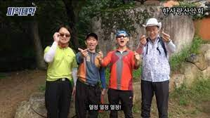

개발자가 되고싶다. 엉엉. 열심히 공부하자. 퇴근하고 조금이라도 더 보고, 열정있고 끈기있게 준비하자 파이팅!! 열정 열정 열정!!
하루 2시간 이상 목표, 너무 조급하게 생각하지 말고 내가 좋아하는 일이니 즐겁게 즐기자
개발 공부를 돌입하고 첫 평일이다. 뭐 일요일에 시작해서 그다음날이간 하지만...
목표는 github잔디 매일 채우기이다. 조금이라도 사소한 것이라도 수정해서 매일 올리자. 작은 것이라도 이렇게 매일매일 수정하고 그것들이 모이면 나중에 보았을 때 큰 자산이 될 수 있고 뿐만아니라 내 생각을 잘 정리하고 기획을 할 수 있을 것이라 생각한다. 귀찮고 힘들더라도 파이팅!!